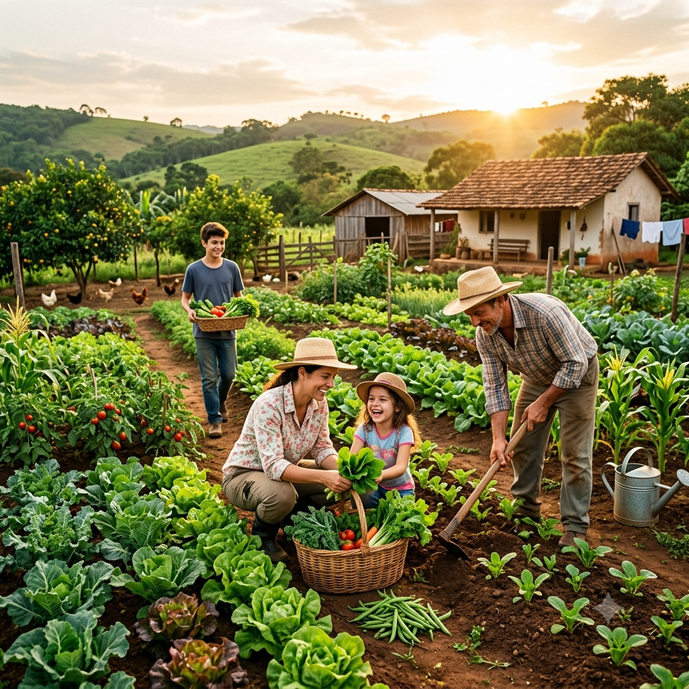

img{
width: 800px;
height: 800px;
}

Agricultura Familiar No Paraná
O que é agricultura familiar:
No Brasil, agricultura familiar é definida pela Lei nº 11.326/2006. Em geral, envolve propriedades rurais pequenas, administradas pela própria família, com mão de obra predominantemente familiar e renda vinculada ao estabelecimento rural.
No Paraná, esse modelo é extremamente forte por causa da colonização europeia, da tradição cooperativista e do apoio técnico estadual.
Panorama da agricultura familiar no Paraná:
O Paraná está entre os estados mais fortes do país nesse setor.
-a agricultura familiar representa cerca de 28% do Valor Bruto da Produção Agropecuária estadual;
-em algumas cadeias produtivas, os agricultores familiares respondem por mais de 50% da produção;
-o setor tem enorme impacto em alimentos básicos, leite, hortaliças, feijão, mandioca, frutas e produção orgânica.
O estado também é líder nacional em cooperativismo agrícola.
Principais produtos da agricultura familiar paranaense:
Produção vegetal:
Os principais produtos incluem:
-feijão;
-mandioca;
-milho;
-hortaliças
-frutas;
-café;
-trigo;
-soja em pequenas propriedades;
-produção orgânica e agroecológica.
Produção animal:
-leite;
-aves;
-suínos;
-piscicultura;
-mel;
-ovos;
A cadeia leiteira é especialmente importante no Oeste, Sudoeste e Centro-Sul do estado.